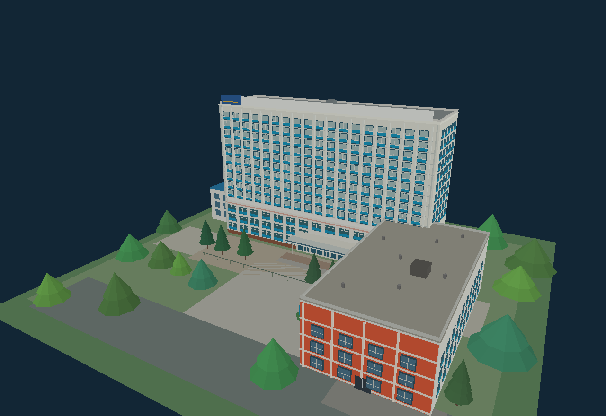
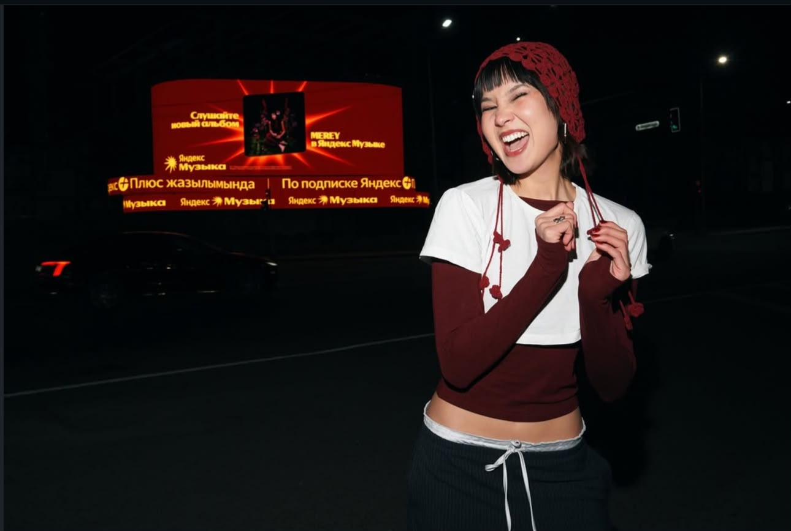
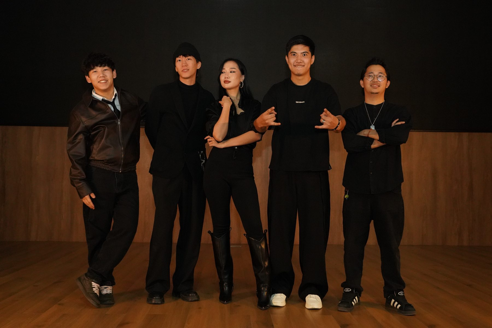
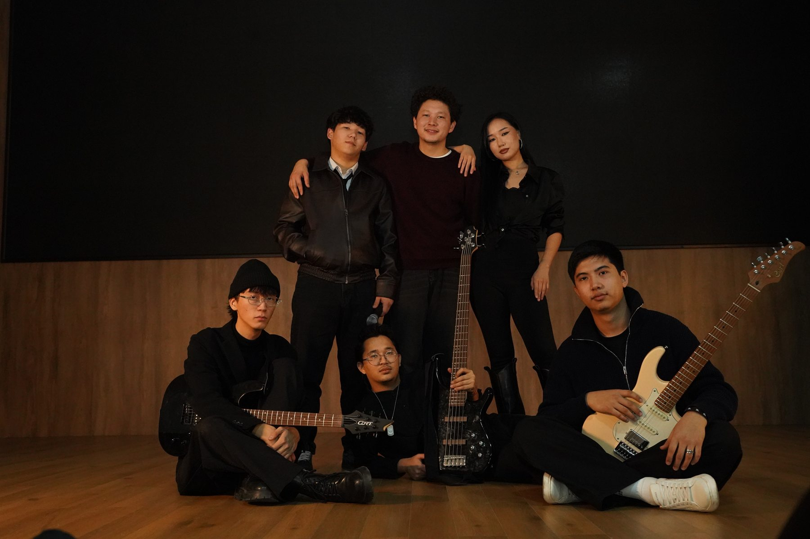

Үлкен мәжіліс залы
Төле би көшесі, 100 · Алматы
2GIS-ТЕ МАРШРУТ ҚҰРУATU MUSIC CLUB × TWO’US ҰСЫНАДЫ
Бір сахна. Жанды музыка. Алматы.

ATU · 3D КАМПУС01 — КОНЦЕРТ
Өтетін орын, кіру және картадағы бағыт.
Төле би көшесі, 100 · Алматы
2GIS-ТЕ МАРШРУТ ҚҰРУ
БАСТЫ ҚОНАҚ02 — БАСТЫ ҚОНАҚ
«Туыс» кешінің хедлайнері. MEREY туралы Instagram-нан біліп, әндерін төмендегі сілтемелерден тыңда.
MEREY INSTAGRAM-ДА03 — БІР САХНАДА
ATU MUSIC CLUB-ПЕН БІРЛЕСКЕН КОНЦЕРТ
TWO’US тобы 2023 жылы құрылды. «Туыс» концертінде топ ATU Music Club-пен бірлесіп өнер көрсетеді.


Осы кешті өткізуге мүмкіндік бергені үшін ATU-ға алғыс айтамыз.